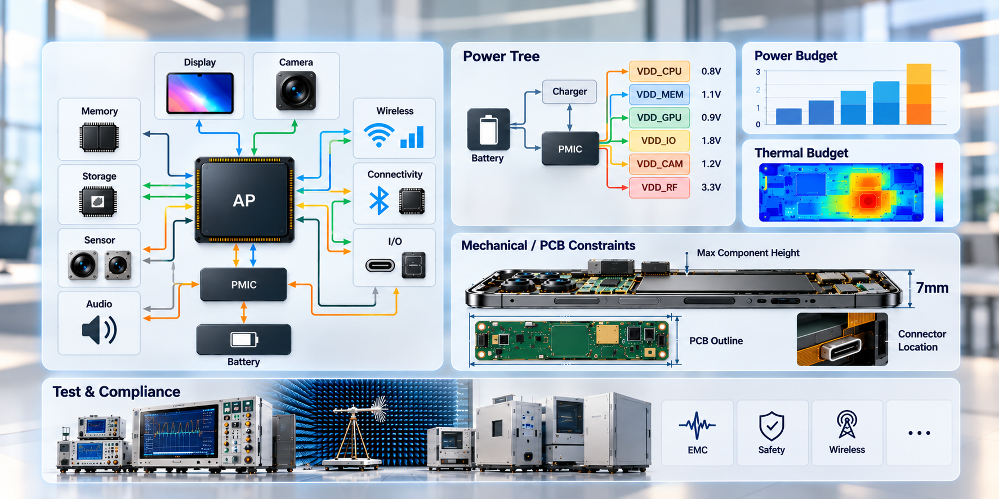
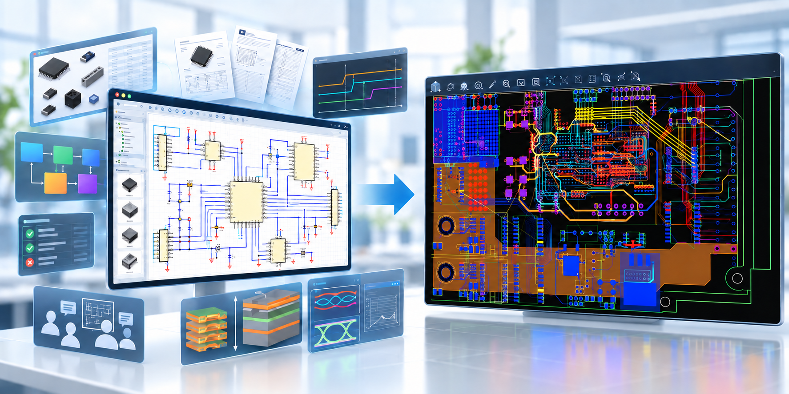
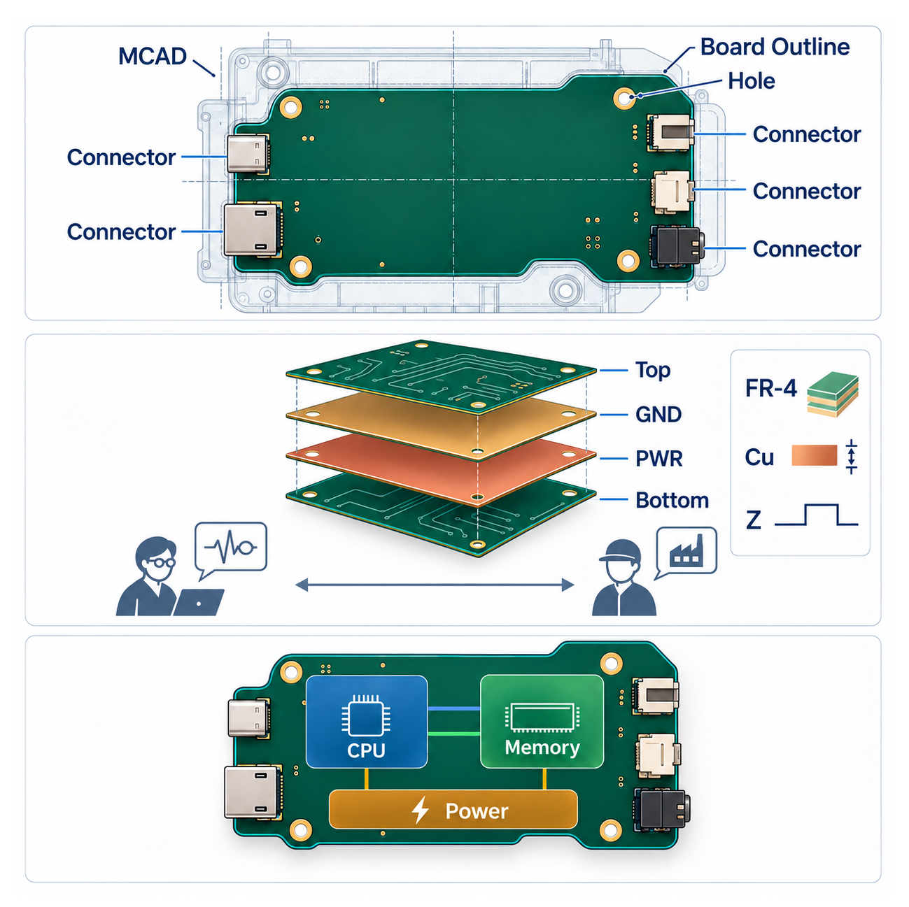
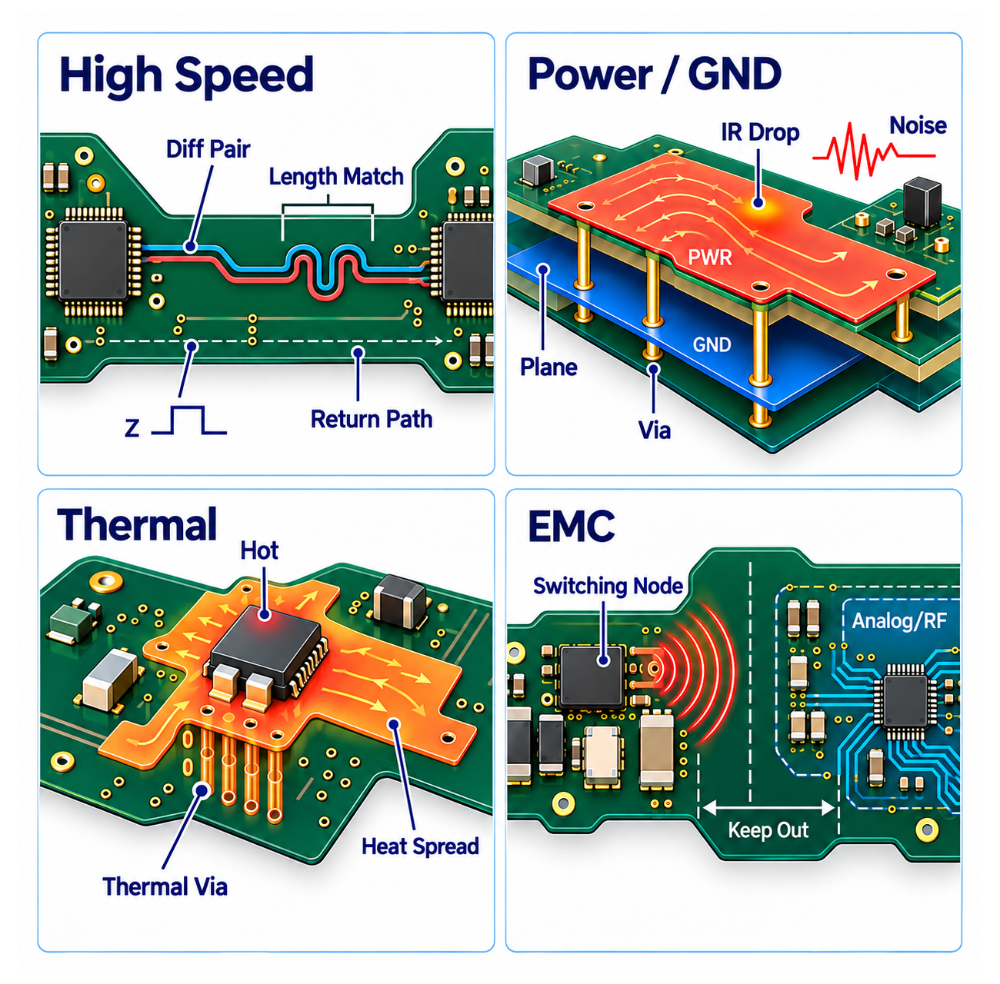
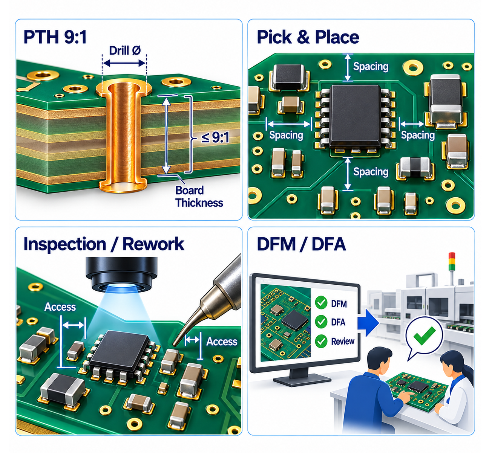
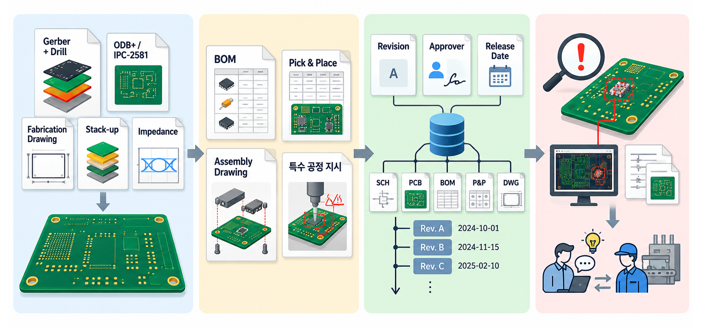
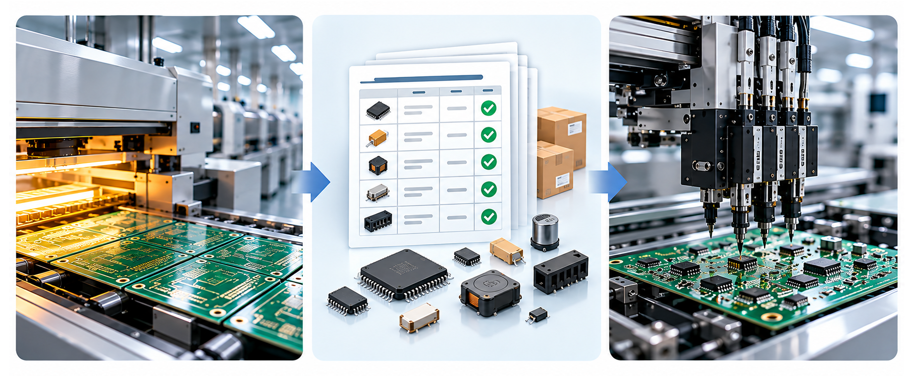
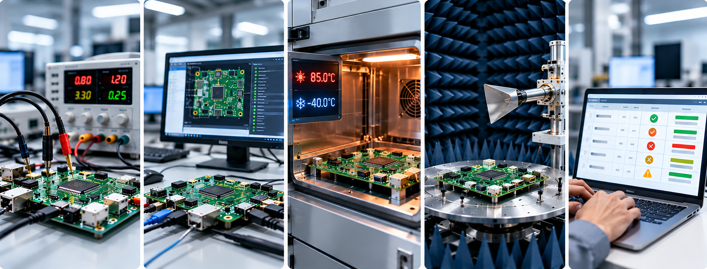
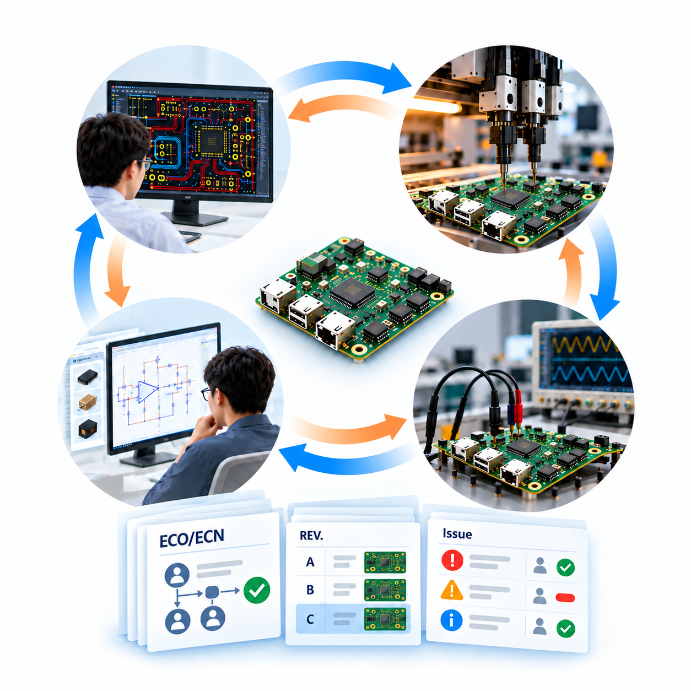

PCB 개발을 단지 “회로를 그리고 PCB를 만드는 일”이라고만 생각하면 절반을 놓치는 것입니다. 실제 제품을 개발하기 위해서는 제품기획, 회로설계, PCB Layout, 기구, 구매, 제조, 품질, 시험, 생산기술 등 여러 단계를 거치는 동안 여러 팀이 제품을 서로 다른 관점에서 바라보며 과제를 수행합니다.
PCB 개발은 혼자 뛰는 마라톤 경기가 아니라 여러 팀이 바톤을 주고받는 릴레이 경기에 더 가깝습니다.
앞선 「PCB 개발이란」에서는 회로도 설계 → PCB Layout → PCB 제작 → 전자부품 조립(SMT) → 시험 및 검증 → 양산 → 유지보수라는 큰 흐름을 간략히 살펴보았습니다.
이번 글에서는 그 흐름을 조금 더 확장하여, 시장조사와 제품구상부터 시작해 각 단계에서 어떤 팀이 무엇을 결정하고, 어떤 자료와 리포트를 만들며, 무엇을 놓치지 말아야 하는지 전자 설계의 관점에서 살펴보겠습니다.
좋은 PCB 개발 프로세스는 “각 팀이 열심히 일하는 것”을 넘어, 팀 간 협업이 원활하게 이루어지고 결정사항과 변경사항이 다음 단계에 정확히 전달되며 추적될 수 있는 구조를 갖추는 것입니다.
1. 제품을 만들기 전에 이미 PCB 개발은 시작됩니다
1) 시장조사·제품구상 — “무엇을 만들 것인가?”
주요 참여 팀: 상품기획, 영업/마케팅, 시스템·제품기획, R&D 리더
이 단계에서는 아직 회로도 설계도 시작되기 전이지만 사실 PCB 설계의 방향은 상당 부분 정해집니다. 제품의 크기, 가격, 소비전력, 통신 방식, 사용환경, 안전규격, 출시 시점 같은 조건이 정해지기 때문입니다.
예를 들어 “7mm 두께의 스마트폰에 스냅드래곤 8 프로세서와 카메라 3개, 배터리 5400mA를 넣자”는 한 문장은 이후 PCB의 층수, 부품 밀도, 발열, 안테나 배치 난이도까지 줄줄이 영향을 줍니다.
- 시장과 고객 요구 파악 - 고객이 원하는 기능, 경쟁제품의 특징, 목표 가격대, 예상 판매량을 조사합니다.
- 제품 컨셉 정의 - 크기, 무게, 사용환경, 전원방식, 주요 인터페이스, 안전·규제 조건을 정합니다.
- 개발 일정과 사업성 검토 - 목표 출시일, 시제품·인증·양산 일정, 개발비와 목표 원가를 가늠합니다.
주요 산출물: 제품기획서, 시장·경쟁제품 조사자료, 요구사항 목록, 인증규격, 목표원가 및 개발일정 초안
2) 요구사항·시스템 구조 정의 — “기능을 어떤 블록으로 나눌 것인가?”
주요 참여 팀: 시스템 엔지니어, 하드웨어/회로설계, 소프트웨어/펌웨어, 기구, 시험·인증
제품 컨셉이 정해지면 기능을 엔지니어링의 언어로 바꿉니다. 메인 프로세서, 메모리, 전원, 센서, 통신, 디스플레이 등 기능 블록을 정의하고 각 블록이 어떤 전압과 신호로 연결될지 결정합니다.
만약 하드웨어 혼자 결정하면 나중에 “발열이 커서 방열구조를 바꿔야 합니다”, “기구적으로 그 위치에는 부품이 있으면 안됩니다” 같은 문제를 뒤늦게 발견하기 쉽습니다.
- System Block Diagram 작성 및 주요 인터페이스 정의
- 전원 구조(Power Tree), 예상 전력·열 예산, 주요 통신 대역폭 산정
- 기구 공간과 PCB 외형, 커넥터 위치, 주요 부품 높이 제약의 초기 협의
- 인증(EMC/안전/무선 등) 요구사항, 테스트 전략을 초기 단계부터 반영

주요 산출물: 시스템 블록도, 인터페이스 사양, 전원 구조(Power Tree), 요구사항 추적표, 초기 Risk List
3) 핵심부품 선정·수급성 검토 — “기능에 적합하면서 수급에 문제 없는 부품”
주요 참여 팀: 회로설계, 부품기술/Component Engineering, 구매, 품질
엔지니어는 성능이 좋은 부품을 사용하고 싶지만, 구매팀은 가격·납기와 공급사의 신뢰도를, 품질팀은 신뢰성과 부품 인증정보를 봅니다.
데이터시트 한 장만 보고 부품을 선택했다가 “납기 지연”, “수급 불안정” 문제를 마주치면 제품은 훌륭하지만 만들어 팔 수 없게 됩니다.
따라서 부품을 선택할 때는 데이터시트 이외에도 가격·납기·공급망·품질·인증 정보를 함께 확인해야 합니다
주요 산출물: 핵심부품 후보표, AVL/제조사 정보, Lifecycle·가격·납기 검토자료, 부품승인서, PCB Library 등록 요청서
2. 회로도 설계 — 기능을 전기적인 언어로 구체화합니다
주요 참여 팀: 회로설계 엔지니어, 시스템 엔지니어, 부품/Library 담당, 검토자, 경우에 따라 SI/PI·전원 전문가
회로도(Schematic)는 “어떤 부품을 어떤 관계로 연결할 것인가”를 정의하는 단계입니다. 회로설계자는 기능만 구현하는 것이 아니라 전원 시퀀스, 신호제약조건, 부품의 정격, 보호회로, 대체부품 가능성, PCB 설계의도, 테스트 포인트까지 함께 고민해야 합니다.
- 회로 작성 - CPU/MCU, Memory, Power, Sensor, Communication 등 기능 블록별 회로를 구성합니다.
- 부품 속성 관리 - Part Number, 제조사, 정격, Package, 구매정보, BOM 속성을 정확히 연결합니다.
- 전기 규칙 검토 - ERC, 핀 연결 오류, 전원 핀 누락, 신호 방향 오류 등을 확인합니다.
- Design Review - 동료 엔지니어, 시스템, 펌웨어, 제조·시험 관계자가 회로를 함께 검토합니다.
- PCB로 넘길 설계 의도 표시 - Critical Net, Differential Pair, Impedance, 길이 조건, 전류가 큰 전원망 등 Layout에 필요한 제약조건을 명확히 전달합니다.

주요 산출물: Schematic, 초기 BOM, Netlist/Design Database, 회로검토 체크리스트·Review 기록, 설계 제약조건
데이터 관리의 중요성
이 단계부터는 ‘설계’만큼이나 ‘데이터의 관리와 연결’이 중요해집니다.
회로도 설계가 시작되면 사용되는 부품 하나하나에 회로 Symbol, Footprint, Part Number와 다양한 부품 속성 정보 등 여러 데이터가 연결됩니다. 또한 회로도를 설계하면서 정의한 설계제약조건은 PCB Layout으로 전달되고, 부품정보는 BOM(Bill Of Materials)을 통해 구매·생산 업무로 이어집니다.
즉, 회로도는 단순히 전기적인 연결을 그린 그림이 아니라 앞으로 PCB를 설계하고 제조, 조립을 하기 위해 필요한 여러 데이터를 만들어 내는 출발점입니다.
이러한 정보가 사람의 기억이나 Excel 파일, 이메일 등에 개별적으로 흩어져 관리된다면 같은 내용을 여러 차례 재입력해야 하고, 변경된 정보가 다음 단계에 제대로 전달되지 않는 문제가 발생할 수 있습니다.
예를 들어 회로에서 부품을 변경했는데 BOM에는 이전 부품이 남아 있거나, 회로설계자가 지정한 중요한 정보들이 PCB Layout에 전달되지 않는 식입니다.
따라서 회로도 설계 단계에서부터 Library, 설계 제약조건, PCB Layout, BOM, 변경이력 등이 서로 원활하게 연결될 수 있는 시스템과 프로세스를 갖추는 것은 매우 중요합니다. 좋은 PCB 개발 환경은 각 단계에서 만들어진 데이터를 다음 단계로, 또는 단계를 순환하며 정확히 전달하여 활용할 수 있도록 연결하는 환경입니다.
축구경기에 비유하자면 선수 개개인의 실력뿐 아니라 패스가 잘 연결되어야 골을 넣을 수 있는 것과 같습니다. PCB 개발에서도 데이터가 부서와 시스템 사이에서 끊기지 않고 이어지는 것이 중요합니다.
“결국 회로도 설계 이후의 PCB 개발 경쟁력은 개별 설계자의 작업 능력뿐 아니라, 설계 데이터가 얼마나 정확하게 관리되고 다음 프로세스로 긴밀하게 연결되는가 에 의해 크게 좌우됩니다.
3. PCB Layout — 회로도의 설계 의도를 실제 공간과 물리법칙에 재구성합니다
주요 참여 팀: PCB Layout 엔지니어, 회로설계, 기구설계, SI/PI·열/EMC 분석, 제조·SMT 기술
회로도에서 선 한 줄은 단순히 “연결”이라는 의미만 갖지만, PCB에서는 그 선의 폭과 길이, 층, 주변 선과의 거리, 전원·접지 구조 등을 갖게 됩니다. 즉 “연결만 되면 끝”이 아니라 신호품질, 전원안정성, 발열, 제조성, 조립성까지 동시에 만족시켜야 합니다.
1) PCB 구조와 배치 계획
- Board Outline, Mounting Hole, Connector 위치 등 기구 조건을 MCAD와 맞춥니다.
- Stack-up, Layer 수, 재질, Copper 두께, Impedance 조건을 제조사·분석 담당과 협의합니다.
- CPU, Memory, Power, Connector 등 핵심부품을 기능과 신호흐름, 발열을 고려해 배치합니다.

2) 배선과 분석
- 고속신호 - Differential Pair, 길이 Matching, Impedance, Return Path 등을 고려합니다.
- 전원·접지 - Plane 구조, 전류 용량, Via 구성, 전압강하와 노이즈를 확인합니다.
- 발열·EMC - 고발열 부품, 전류 Loop를 고려하고, 전자기에 민감한 Analog/RF 영역을 분리·최적화합니다.
- 검증 - DRC, Constraint Check, 필요 시 SI/PI/열/EMI Simulation을 수행하고 결과를 반영합니다.

3) 제조·조립성을 고려한 마무리
설계가 전기적으로 훌륭해도 만들기 어렵다면 좋은 설계라고 할 수 없습니다.
최소 선폭/간격, 부품 간 간격, Pick & Place 가능성, Reflow 방향, 검사·수리 접근성 등 잠재적인 제조 문제를 최종 확인하고 검토합니다.
생산팀에게 “알아서 만들어 주세요”라고 넘겨서 될 것이 아니라 DFM / DFA 를 통해 제품을 만들 수 있는 설계를 해야만 합니다.

주요 산출물: PCB Design Database, Placement/Route Review 자료, Stack-up/Impedance 정의, DRC Report, SI/PI/열 분석 Report, 3D/기구 간섭 검토자료
4. 설계 Release와 제작 준비 — “CAD 데이터”를 “생산 가능한 정보”로
주요 참여 팀: 회로·PCB 설계, 문서/도면 관리, 구매, PCB 제조사, SMT 제조·생산기술, 품질
PCB Layout이 끝났다고 바로 공장을 움직일 수는 없습니다. 제조에 필요한 여러 데이터를 만들어 승인을 받고, 추적할 수 있도록 보관해야 합니다. 마치 관공서에 서류를 제출하는 것처럼 놓치거나 잘못된 것이 없어야 합니다.
- PCB 제작 데이터 - Gerber와 Drill, ODB++ 또는 IPC-2581, Fabrication Drawing, Stack-up, Impedance 정보 등
- 조립 데이터 - BOM, Pick & Place, Assembly Drawing, 특수 공정 지시
- 문서 관리 - Revision, 승인자, Release Date, 변경이력(ECO/ECN)을 기록하고 모든 데이터의 버전을 연결하여 보관합니다.
- 문제 대응 - 문제가 발생하면 설계 의도를 확인하면서 대응하거나, 필요하다면 설계를 수정하여 다시 앞의 과정을 반복합니다.

주요 산출물: Fabrication Package, Assembly Package, Released BOM, 제조사 질의·답변 기록, Release 승인기록
5. PCB 제작·SMT·시제품 조립 — 설계가 현실과 만나는 곳
주요 참여 팀: PCB 제조사, SMT 업체/생산팀, 생산기술, 구매·자재, 품질, 설계 엔지니어
제조 단계에서는 설계자가 만든 정보가 실제 제품으로 변합니다. 여기서 발견되는 문제는 대개 “도면에는 있었지만 생산에 필요한 정보 누락” 또는 “설계에서는 가능했지만 제조공정을 고려하지 못한 조건”에서 생깁니다.
PCB 제작(Fabrication)
적층, 노광·식각, 도금, Drill, Solder Mask, Surface Finish, 전기검사 등을 거쳐 Bare PCB를 만듭니다. 치수, 임피던스, 외관, 전기검사 결과 등을 확인합니다.
BOM·자재 관리
PCB에 조립할 부품들이 승인된 BOM·AVL (Approved Vendor List)과 일치하는지 확인합니다. 부족·단종·대체 이슈가 생기면 설계팀과 확인하여 조치합니다.
SMT 조립(Assembly)
Stencil 인쇄 → 부품 실장 → Reflow → AOI/X-ray/검사 등의 순으로 조립합니다. BGA, Fine Pitch, 열에 민감한 부품 등은 주의해서 작업합니다.

주요 산출물: 조립이 완성된 PCB, 제조검사 결과(AOI·X-ray·공정검사 Report 등), 자재 투입기록, 불량·Rework 기록
6. 브링업·시험·인증 — “전원이 켜졌다”로 끝나지 않습니다
주요 참여 팀: 회로/하드웨어, 펌웨어·소프트웨어, 시험·검증, 시스템, 품질, 인증 담당
처음 조립된 시제품에 전원을 넣는 순간을 브링업(Bring-up)이라고 합니다. 이때는 바로 전체 기능을 실행하기보다 전원 Short 여부, 각 전압 Rail, Clock/Reset, 소비전류를 단계적으로 확인합니다. “전원이 켜지니까 성공”이라고 생각하는 것은 순간의 행복으로 끝나는 경우가 많습니다.
- 기본 브링업 - Open/Short 체크, Current, Clock, Reset, Boot 여부 확인
- 기능시험 - 인터페이스, Sensor, 통신, I/O, Memory, 주변장치 동작 검증
- 성능·Stress 시험 - 온도, 전압, 부하, 장시간 동작, 고속통신 Margin 등 검토
- EMC/안전/무선 인증 Pre-test 및 공식시험, 문제 발생 시 원인분석과 설계 수정
- 시험 결과를 요구사항과 연결해 Pass/Fail을 추적하고, 미해결 Issue의 Owner와 Due Date를 관리

주요 산출물: 브링업 Checklist, Test Report, 인증 성적서, Issue List, 원인·개선 Report
7. 문제 발견과 Iteration — 다시 앞으로 돌아가는 것이 정상입니다
PCB 개발은 한 방향으로만 흐르는 컨베이어벨트가 아닙니다. Layout에서 공간 부족이 발견되면 회로로 돌아가 부품을 바꾸고, 시험에서 신호오류가 발견되면 Layout·회로·펌웨어를 함께 수정할 수도 있습니다.
시제품 Revision A가 한 번에 양산품이 되는 경우보다 A→B→C 를 거치며 개선되는 경우가 더 많습니다.
중요한 것은 “수정의 교훈”, 즉 왜 수정했는지와 어디까지 영향이 있는지를 관리하는 것입니다. 그래서 ECO/ECN, Revision 관리, 승인 절차, 문제·조치 기록이 중요합니다.

주요 산출물: Issue Tracker, Failure Analysis Report, ECO/ECN, Revision History, 재시험 결과 및 Closure 기록
8. 양산 전환·양산·유지보수 — 설계의 끝이 아니라 수명주기의 시작
주요 참여 팀: NPI/생산기술, 제조, 품질, 구매·SCM, 설계, 서비스/Field, PLM·문서관리
시제품이 동작한다고 바로 대량생산에 들어가는 것은 아닙니다. 양산 전환에서는 공정능력과 수율, 검사방법, 작업표준, 자재 안정성, 공급망을 확인합니다. 양산 이후에도 현장불량, 원가절감, 부품 단종, 기능개선 때문에 설계변경이 계속 발생합니다.
Pilot Run/NPI
소량 양산으로 조립성, 공정시간, 수율, 검사 Coverage를 확인합니다.
양산 승인
생산·품질·설계가 주요 Issue의 Closure와 양산 조건을 확인합니다.
품질 관리
수율, 불량률, RMA/Field Failure를 모니터링하고 반복 불량의 원인을 분석합니다.
Lifecycle 관리
EOL/PCN 대응, 대체부품 검증, Cost Down, 공급망 리스크에 따른 BOM 변경을 관리합니다.
주요 산출물: NPI/Pilot Report, 양산승인 기록, Control Plan/검사기준, Yield·불량 분석자료, PCN/EOL 검토, 양산 ECO/ECN
9. 프로세스가 잘 돌아가는 회사의 공통점
① 입력과 출력이 명확합니다
각 팀, 각 단계에서 무엇을 받아서 어떤 것을 만들어 다음 단계로 넘겨야 하는지 정의되어 있습니다.
② Review가 단지 “사인 받기”가 아닙니다
회로·PCB·기구·제조·시험이 필요한 시점에 함께 협력하여 검토하고, 이슈사항의 조치 여부를 추적합니다.
③ 동일한 데이터를 바라봅니다
개인 PC, 메일 첨부파일, 메신저에 각기 다른 BOM과 Gerber가 돌아다니지 않도록 시스템 또는 관리체계로 버전을 관리해 통제합니다.
④ 변경 이유와 영향범위를 기록합니다
“문제점을 수정했다”가 아니라 누가·언제·왜 바꾸었는지, 어떤 제품의 어느 Revision에 영향이 있는지를 남깁니다.
⑤ 앞단계에서 Risk를 사전에 예방합니다
제조후에 문제를 발견하는 것보다, Library·Rule·Review·Simulation·DFM을 통해 설계를 진행하면서 문제를 예방하는 것이 훨씬 저렴합니다.
마무리
PCB 개발은 회로설계자와 Layout 엔지니어만의 일이 아닙니다.
시장과 고객의 요구를 분석하여 제품기획팀이 정의하고 시스템의 기능을 나누며 회로,PCB,기구팀에서 이를 설계합니다. 구매팀은 실제로 조달 가능한 부품인지 확인하고, 제조·생산기술팀은 제품을 만들 수 있는지, 시험·품질팀은 요구한 성능이 나오는지를 검증합니다.
그리고 각각의 단계에서 만들어지는 모든 데이터와 문서는 다음 팀의 중요한 입력자료가 됩니다.
결국 PCB 개발 프로세스의 수준은 “좋은 CAD Tool을 쓰는가?” 하나로 결정되지 않습니다.
사람과 팀, 데이터, Review기록, 제조·테스트, 변경관리의 연결이 얼마나 자연스럽고 추적 가능하게 이어지는지가 더욱 중요합니다.
다음 글에서는 이 흐름에서 계속 등장한 BOM 관리와 PCB 도면·설계데이터 관리가 왜 별도의 중요한 주제가 되는지 이어서 살펴보겠습니다.